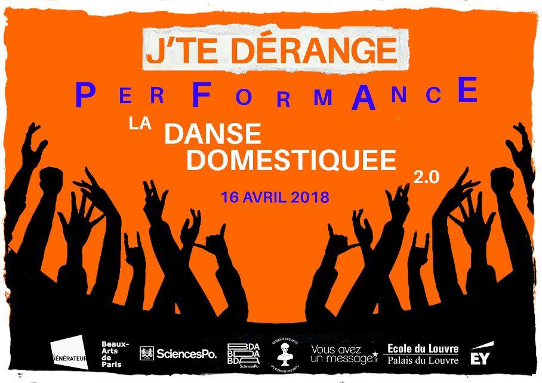
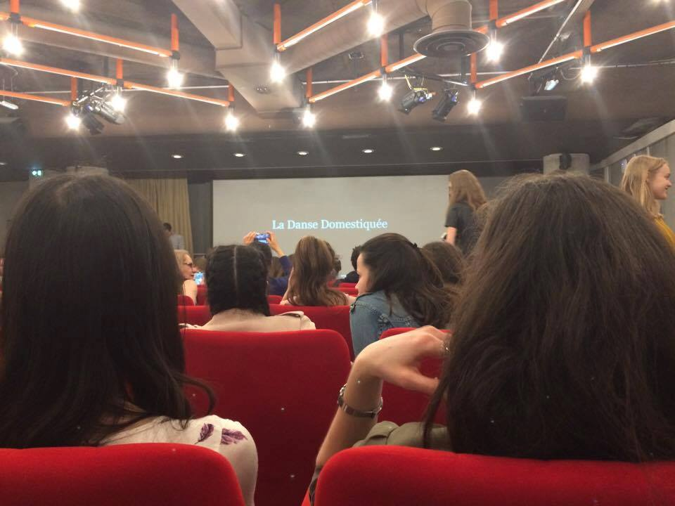
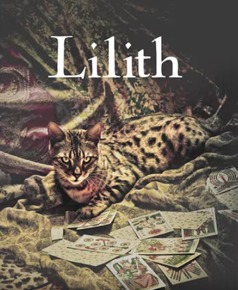
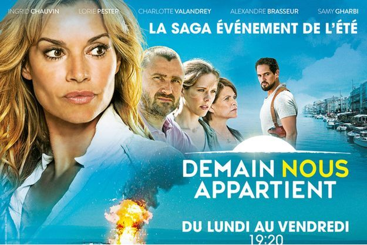
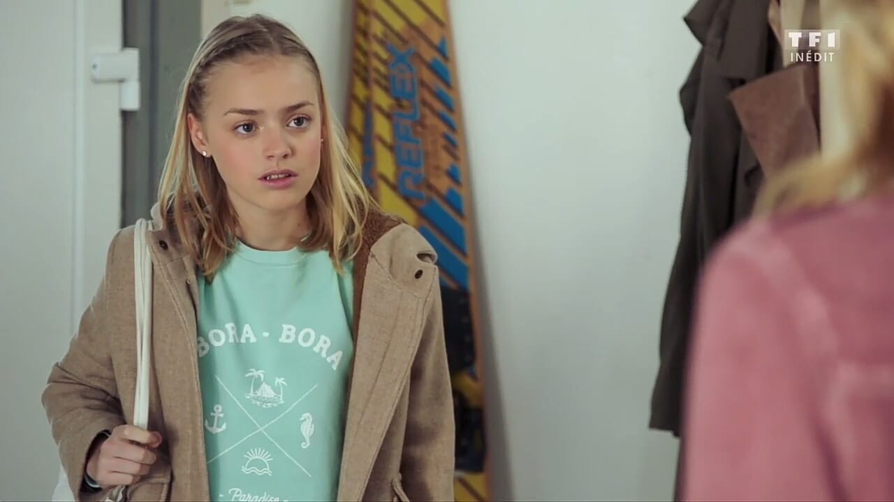
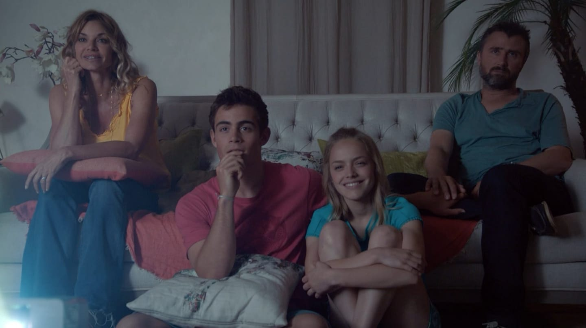
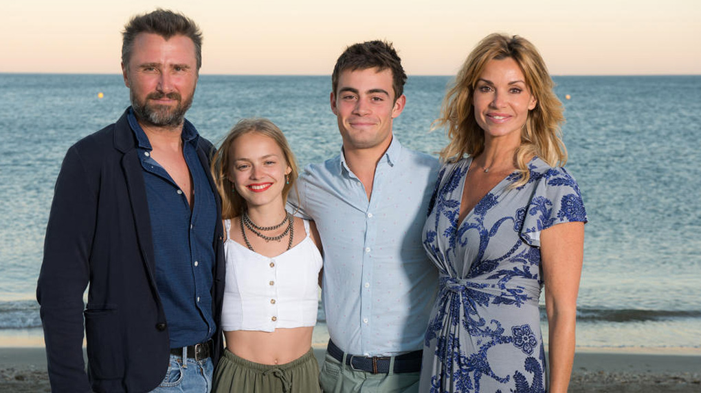

IMDb profile Link to Sylvie Filloux Interviews Actress in France for Tomorrow is Ours Link to Interviews
Danse domestiquée Link to Teaser  Explanations Self made movie about the relationship between politics and dance Link to event 
Lilith Link to Tesaer  Explanations Short film Produced by Isabelle Noguera. I played Lucile, one of the principal role.
Tomorrow is ours Link to IMDb  Explanations French quotidian TV show It is released on the national chain with 4 million of viewers. Judith is the 15 years old girl of the Delcourt Family, the main family of the TV show. Link for description of the characters   